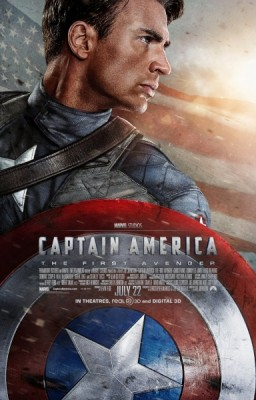
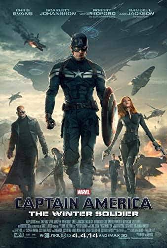

Captain America: The First Avenger (2011)
Captain America: The First Avenger is a 2011 American superhero film based on the Marvel Comics character Captain America. Produced by Marvel Studios and distributed by Paramount Pictures, it is the fifth film in the Marvel Cinematic Universe (MCU). Captain America: The First Avenger premiered at the El Capitan Theatre on July 19, 2011, and was released in the United States on July 22, as part of Phase One of the MCU. The film was commercially successful, grossing over $370 million worldwide.
Captain America: The Winter soldier (2014)
Captain America: The Winter Soldieris a 2014 American superhero film based on the Marvel Comics character Captain America, produced by Marvel Studios and distributed by Walt Disney Studios Motion Pictures. It is the sequel to Captain America: The First Avenger (2011) and the ninth film in the Marvel Cinematic Universe (MCU).Captain America: The Winter Soldier premiered in Los Angeles on March 13, 2014, and was released in the United States on April 4, as part of Phase Two of the MCU. The film became a critical and commercial success, receiving praise for the performances and the action sequences, and grossing over $714 million worldwide.
Captain America: The Civil War (2016)
Captain America: Civil Waris a 2016 American superhero film based on the Marvel Comics character Captain America, produced by Marvel Studios and distributed by Walt Disney Studios Motion Pictures. Captain America: Civil War held its world premiere in Los Angeles on April 12, 2016, and was released in the United States on May 6, as the first film in Phase Three of the MCU. The film was a commercial success, grossing over $1.1 billion worldwide, and received positive reviews, including praise for the performances (particularly Evans and Downey), action sequences, and themes.